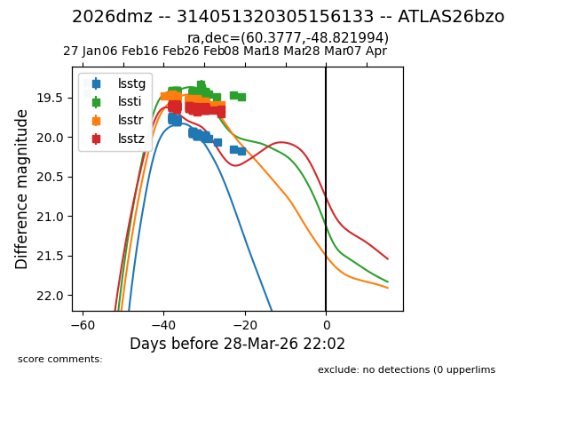
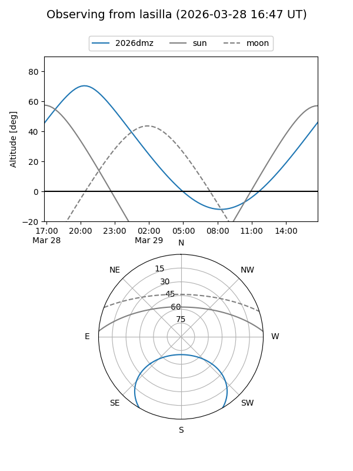
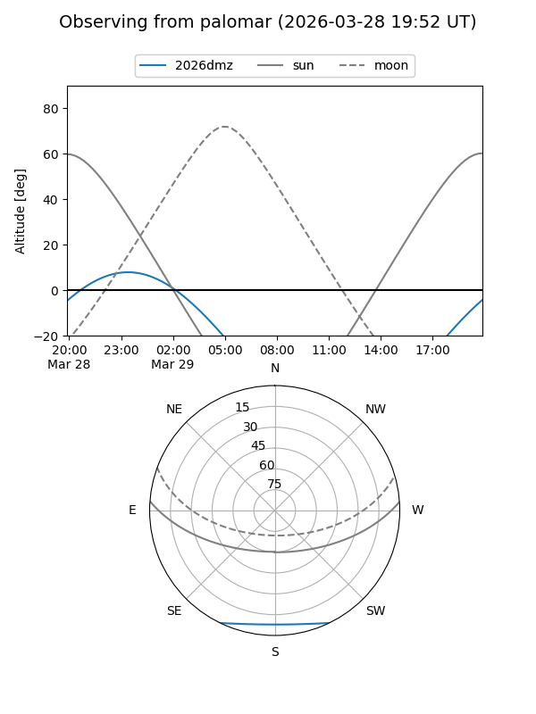
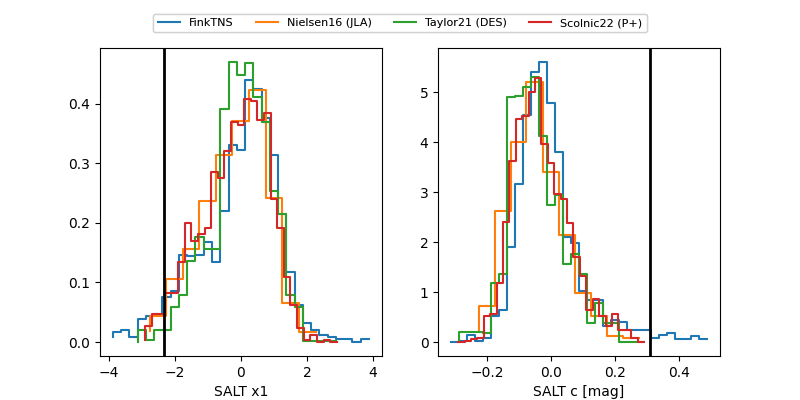

2026dmz
Target 2026dmz at 2026-03-28 22:05
Aliases and brokers:
TNS: link
YSE: link
alt names
314051320305156133 (lsst,fink_lsst)
2026dmz (tns,yse)
ATLAS26bzo (atlas)
Coordinates:
equatorial (ra, dec) = 60.3777,-48.82199
equatorial (HMS+DMS) = 04:01:30.64,-48:49:19.18
galactic (l, b) = (256.8221,-47.64135)
Flags:
Photometry:
last lsstg=20.17, lssti=19.48, lsstr=19.59, lsstz=19.70
95 lsstg, 135 lssti, 114 lsstr, 111 lsstz detections
Lightcurve

Visibility


Additional plots
